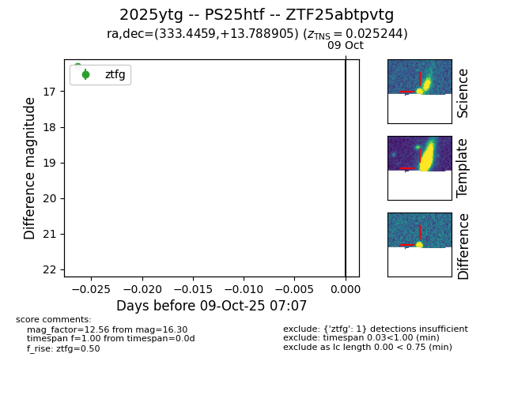

FINK: ZTF25abtpvtg
Lasair: ZTF25abtpvtg
ALeRCE: ZTF25abtpvtg
TNS: 2025ytg
YSE: 2025ytg
ZTF25abtpvtg (ztf,fink)
2025ytg (tns,yse)
PS25htf (panstarrs)
equatorial (ra, dec) = (333.4459,+13.78890)
galactic (l, b) = (74.8833,-33.99303)

last ztfg=16.30
1 ztfg detections